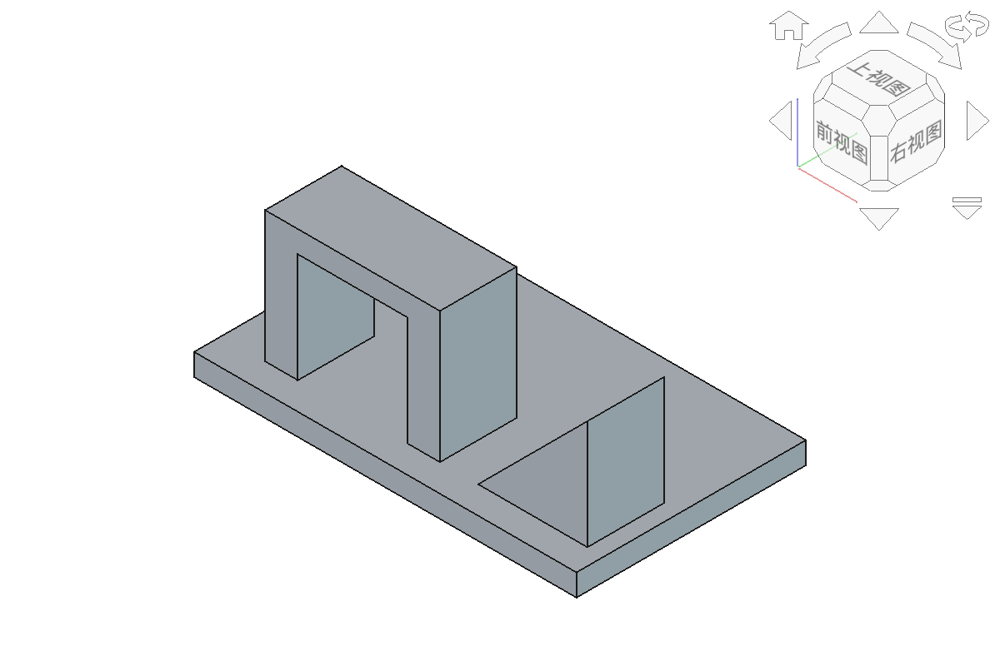
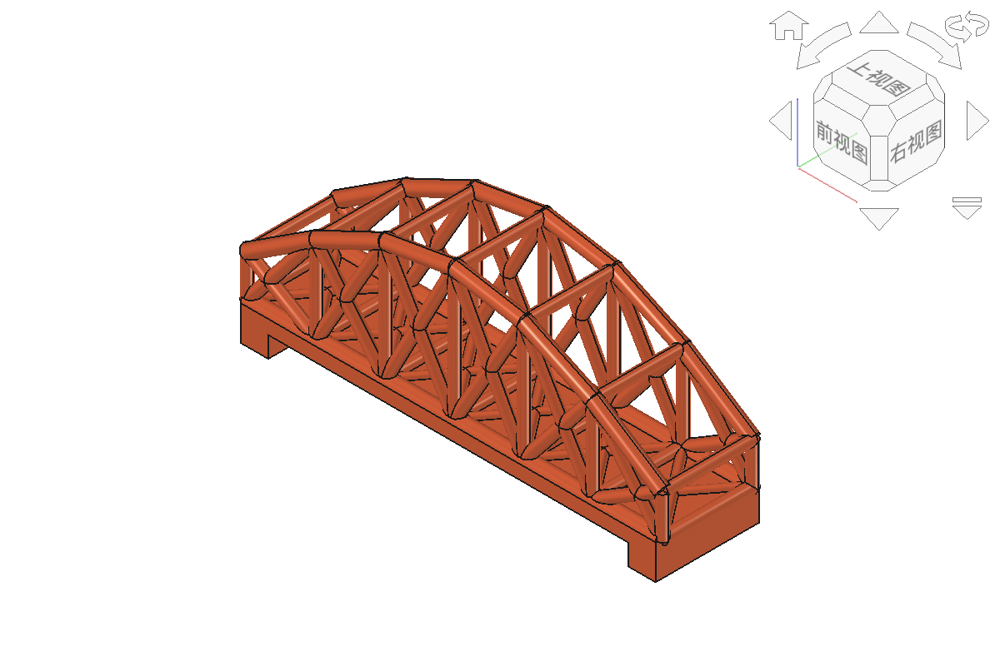

🖨️
模块五
桥梁跨学科项目、有限元分析、切片与承重试验
4课时 · 第14-17课 · 技术实践
⚠️
课前预习！
📖 课前预习
- 确认已安装Cura切片软件
- 了解STL=3D打印通用格式
- 了解切片=把模型切成一层层路径
- 思考桥梁结构、填充密度与承重能力的关系
- 复习3D打印安全规范
📄
STL格式
3D打印通用格式，用三角网格描述表面
打印机只认STL，不认FCStd
# 导出STL
import FreeCAD
import FreeCADGui
import Mesh
selection = FreeCADGui.Selection.getSelection()
Mesh.export([selection[0]], '学号-姓名-钥匙扣.stl')
print('STL导出成功！')
逐行作用读取对象树选择列表，取第1个对象交给Mesh.export()转换为STL三角网格。
运行前在对象树中单击最终实体；导出后到文件目录确认STL实际存在。
易错点STL不保存参数和历史，必须同时保留FCStd；不要误选草图或单个零件特征。
🔍
模型检查
- 破面（非流形）：面片有缺口
- 反转面：法线方向错误
- 零厚度：壁厚为0
- Cura导入时自动检查并提示
⚙️
Cura切片
把3D模型切成一层层2D路径
- 1. 导入STL
- 2. 设置参数（层高/填充/支撑）
- 3. 点『切片』
- 4. 保存G-code到SD卡
📏
层高
0.1mm
精细·慢·表面光滑
0.2mm
标准·推荐·平衡
0.3mm
快速·粗糙·有层纹
🔲
填充
20%
常用·够强度·省时省料
50%
较高强度·受力件
100%
实心·最结实·最慢
🏗️
支撑
悬空>45°需要支撑
支撑打印后需拆除

⚠️
安全规范
❌ 禁止
触摸喷嘴200℃·打印中开门·手取热模型
✅ 必须
等冷却用铲刀取·异常断电报告·保持整洁
🖨️
打印流程
- 1. 开机→预热（喷嘴200℃·热床60℃）
- 2. 进料：PLA丝送入挤出机
- 3. 传输G-code→开始打印
- 4. 观察第一层是否贴牢
- 5. 完成→等冷却→铲刀取下
🌉
正弦拱桁架桥

📊
第15课：FreeCAD FEM有限元分析

100N · 28节点 · 88个B31梁单元 · 最大位移0.0464mm · 最大等效应力1.31MPa
🌉
桥梁跨学科承重验证
融合点：S科学 + T技术 + E工程 + M数学；本项目不为凑齐五项强加A艺术
结构
桥拱、桥面、支撑共同分散载荷
打印
对比层高、填充和打印方向
验证
逐级加载并记录最大承重
🎯
本模块总结
- STL导出 = Mesh.export
- Cura切片 = 层高+填充+支撑
- 打印实操 = 预热→进料→打印→取件
- 桥梁融合点 = S/T/E/M：函数建模→FEM→切片→打印→承重验证
- 安全第一！
- 👉 下一步：结课综合项目